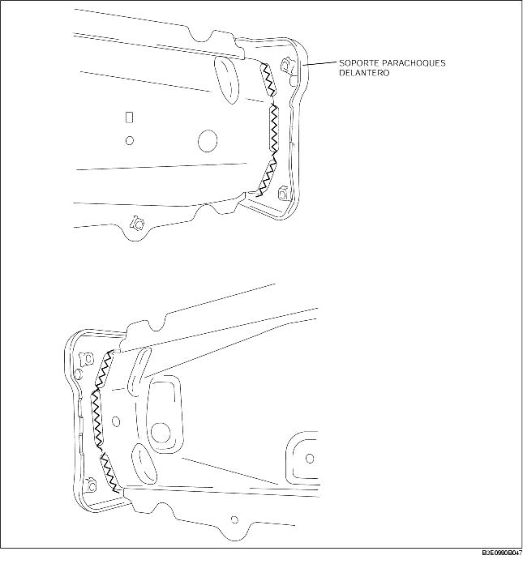

REMOCION SOPORTE PARACHOQUES DELANTERO
B3E098053896B01
1. Quitar el soporte del parachoques delantero.
Advertencia
• Se describe sólo el procedimiento por el lado izquierdo. La forma del lado derecho es diferente.
